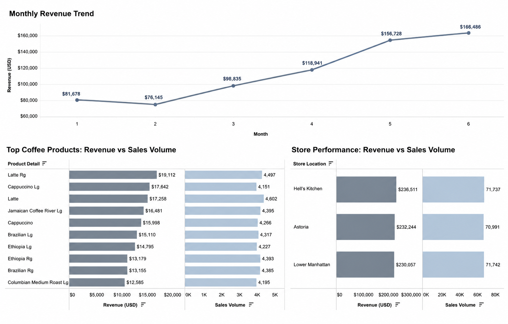

Industry
Food & Beverage Retail
Retail Business Analytics Case Study
Turning transactional sales data into actionable business decisions.

01
Industry
Food & Beverage Retail
Business Scenario
Coffee Shop Sales Performance
Role
Business Analyst
Project Type
End-to-End Analytics Case Study
Tools
SQL · Excel
Deliverables
Dashboard · Report · SQL Analysis
Analysis Focus
Sales · Products · Stores · KPIs
Project Format
Independent Portfolio Project
02
A regional coffee shop chain collects transaction data every day but lacks clear visibility into the factors driving its overall business performance. Management has limited insight into which products contribute most to revenue, how stores compare with one another and when customer demand reaches its peak.
To support more informed decision-making, this project analyses transactional sales data to uncover revenue drivers, evaluate operational performance and identify practical opportunities to improve sales and store efficiency.
03
The analysis was designed to answer five core business questions.
01
02
03
04
05
04
01
Defined the management questions and expected project outcomes.
02
Reviewed, cleaned and structured transaction data for analysis.
03
Used SQL queries to analyse sales, products, stores and time periods.
04
Calculated key metrics to evaluate overall business performance.
05
Built an executive dashboard to communicate performance visually.
06
Translated analytical findings into practical business actions.
05
This project delivers an end-to-end business analytics solution for a retail coffee shop using SQL and Excel.
The analysis evaluates sales performance across stores, products and business periods to identify key revenue drivers and operational opportunities. The results are presented through an executive dashboard and practical recommendations, demonstrating a complete workflow from raw transaction data to business decision support.
06
The dashboard provides an executive-level view of sales performance, enabling decision makers to compare stores, evaluate product categories and identify demand patterns across different business periods.
07
01
Coffee consistently generated the largest share of total revenue, confirming its role as the business's core product category.
02
Sales activity increased significantly during morning periods, creating opportunities to improve staffing schedules and inventory allocation.
03
Differences between stores indicate that successful operational practices could be identified and standardised across the business.
04
Several lower-selling products contributed limited revenue, suggesting opportunities for promotions, bundling or menu optimisation.
08
| Priority | Recommended Action | Expected Business Impact |
|---|---|---|
| High | Increase staffing during morning peak periods. | Improve customer experience and reduce waiting time. |
| High | Focus marketing activity on high-performing coffee products. | Increase sales and improve marketing efficiency. |
| Medium | Bundle lower-selling products with popular menu items. | Improve product mix and average transaction value. |
| Medium | Monitor store-level KPIs on a regular basis. | Support continuous operational improvement. |
09
Implementing the recommendations could help management strengthen both commercial and operational performance.
Align staffing and inventory with peak customer demand.
Increase sales through more focused product promotion.
Share effective operating practices between locations.
Establish a repeatable, data-driven performance review process.
10
11
This project demonstrates a complete Business Analyst workflow, from understanding business objectives and preparing transactional data to generating insights and communicating actionable recommendations.
Rather than focusing solely on technical implementation, the project translates business questions into structured analysis and presents the findings through a dashboard, executive summary and decision-oriented recommendations.
The final deliverables reflect a practical analytics reporting process that could be used by retail managers and business stakeholders to support operational decision-making.
Explore the analysis files and supporting project deliverables.
View the complete project structure and source files.
View Repository →Review the queries used to calculate KPIs and analyse performance.
Browse SQL Scripts →View the Tableau dashboard developed for performance monitoring.
View Dashboard →Read the detailed findings, interpretation and recommendations.
Read Report →